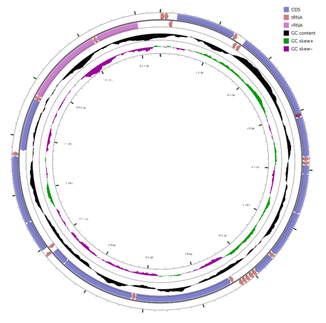
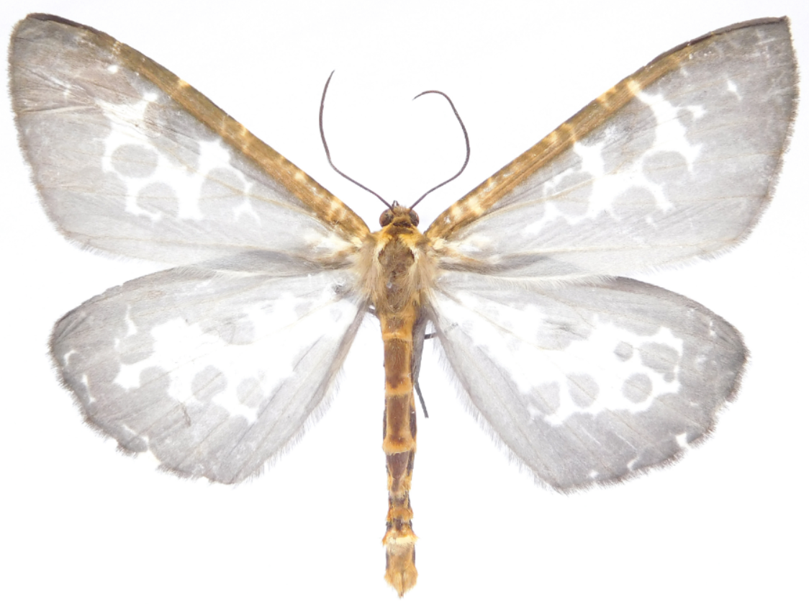
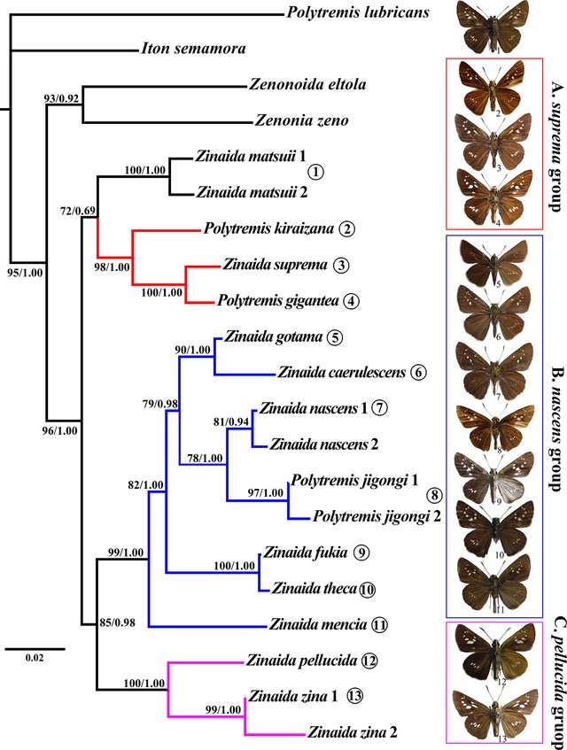
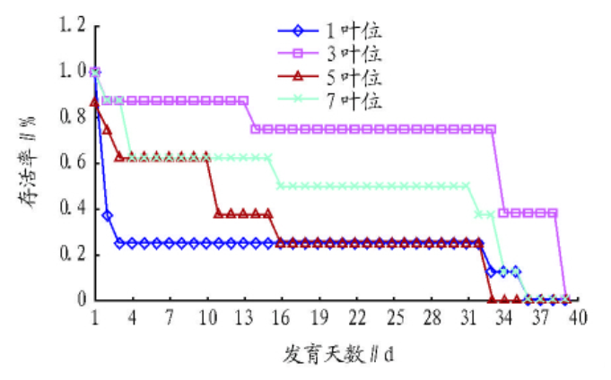

M.Sc.
Lepidoptera Lab, Building of Resources and Environment |
|


Biography [CV]
I am currently a third year M.Sc. student in the Department of Entomology, South China Agricultural University. My current researches mainly focus on: 1) mitochondrial genome;2) molecular phylogeny; 3) taxonomy and evolution in Hesperiidae (Lepidoptera).
I am very interested in the intersection of bioscience and information science. I hope to analyze the data through a computer platform to solve biological problems accurately, or to explore the development of more suitable biological tools.
Reasearch Experience
National Natural Science Foundation of China (Item Number:31872264). (600,000 RMB) 2019.1-2022.12
[ Molecular phylogeny and biogeography of Heteropterinae with special reference to the genus Carterocephalus]
Min wang, Hideyuki Chiba, Tiantian Yu, Lijun Ma, Yuke Han, Siyao Huang, Zhipeng Miu, Xiaoling Fan*.
National Student Innovation Training Program (Item Number:104892013030). (9,000 RMB) 2013.9-2015.6
[ Effects of Different Positions of Leaves from Poplar Branches on Development and Reproduction of Clostera anachoreta ]
Yuke Han*,Wei Hu.
Insect Chemical Ecology Laboratory, College of Plant Science and Technology, Huazhong Agricultural University. 2015.6-9
Publications
|  | Yuke Han, Zhenfu Huang, Jing Tang, Hideyuki Chiba, Xiaoling Fan*. "The complete mitochondrial genomes of two skipper genera (Lepidoptera: Hesperiidae) and their associated phylogenetic analysis" Scientific Reports).
[In Press] |
|  | Yuke Han, Siyao Huang, Xiaoling Fan*. "Epobeidia fumosa (Warren, 1893), a newly recorded moth form China (Lepidoptera: Geoemetridae)" Journal of Environmental Entomology (accepted), 2018. (In Chinese) |
|  | Jing Tang, Zhenfu Huang, Hideyuki Chiba, Yuke Han, Xiaoling Fan*. "Systematics of the genus Zinaida Evans, 1937 (Hesperiidae: Hesperiinae: Baorini)" PLoS One, 2017.
[paper] |
|  | Honggui Yang, Yuke Han, Chuanren Li*. " Effects of Different Positions of Leaves from Poplar Branches on Development and Reproduction of Clostera anachoreta " Journal of Anhui Agricultural Sciences, 2015. (In Chinese)
[paper] |
Awards & Certificate
| National Encouragement scholarship, Yangtze University, 2014 |
| Excellent Student Cadre, YU, 2013 |
| Excellent League Member, YU, 2013 |
| Excellent Speaker of the "Chu Feng Xin Sheng" University Forum, YU, 2013 |
| Third-class Academic Scholarship, South China Agriculture University, 2017 |
| Third-class Academic Scholarship, SCAU, 2016 |
| National Computer Rank Examination Two Level C Language Certificate, 2013 |
Education
| 2016-present | Master of Science | Department of Entomology South China Agricultural University supervised by A/Prof. Xiaoling Fan |
| 2011-2015 | Bachelor's Degree | Department of Plant Protection Yangtze University supervised by Prof. Chuanren Li |
Hobbies
- Mobile Photography. Won the "Mobile Cup" Jingzhou City Mobile Photography Excellence Award [16/2013]
- Volunteer Service. "Youth to Countryside" Summer Voluntary Activity in Yuan'an County, Hubei Province[7/2013]
- Debate. Yangtze University Debate Team Member, Excellent Debater in the 9th "Qingxiao Cup" Debate Competition of Yangtze University[05/2013]
- Singing. Won the first prize of the "Golden Autumn" Chorus Competition Group of Yangtze University[10/2012]
- social activity. Minister of the Joint Management Department of the Agricultural College[5/2013]
- Swimming. Agricultural College Backstroke Runner-up [5/2017]. 2nd place in the 4*50 Group Mixed Swimming Relay Race in SCAU [5/2018]
© Yuke Han | Last updated: 12/10/2018